Compared with other genres, street photography always causes the biggest stir. It is easy for new photographers, and you do not need to learn much or buy expensive gear. The moment you step outside, anything you shoot is what we call street photography. But how do beginners and even pros improve their street work and go beyond what they have already done?
In this article, we look at street photography from five angles.
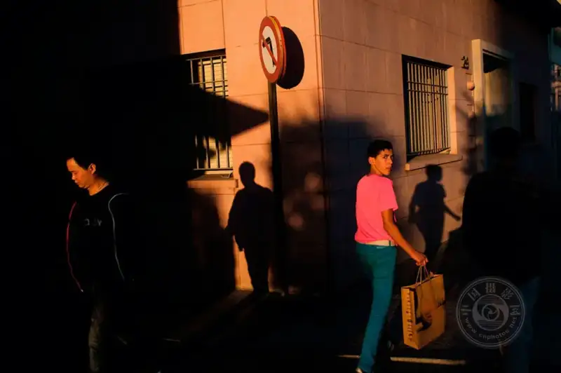
©Marcelo Caballero
Analyze the scene
Once you step outside and take to the street, start to read the scene. Listen to the street. Watch the people. Watch for the moment that will become your photo.
Watch like a hawk. Expect a few situations, and do not panic if a try fails, keep your eyes open, and something better will happen nearby. We see more of the familiar actions we already love. We catch those unique, great moments by chance, or we expect them and strike at the right time. For a street photographer, this is a wonderful experience.
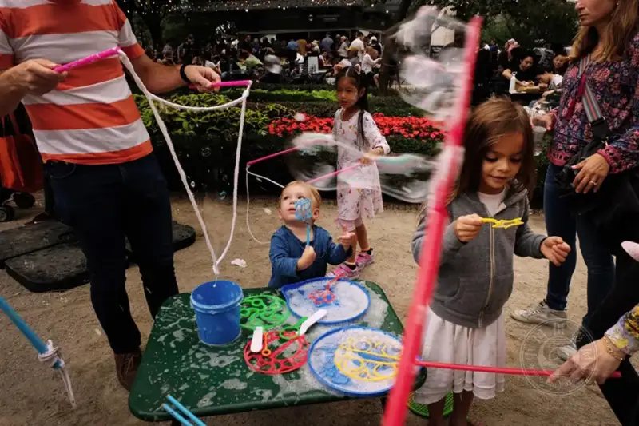
©Brad Jones
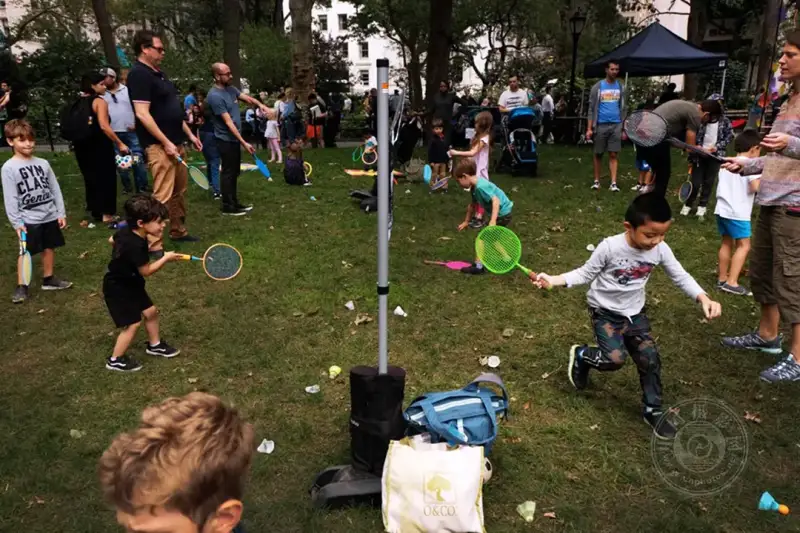
©Brad Jones
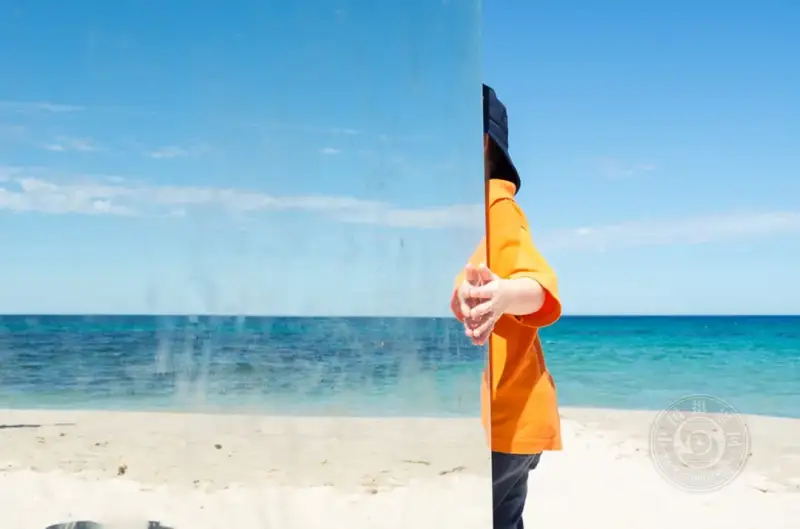
©Rebecca Wiltshire
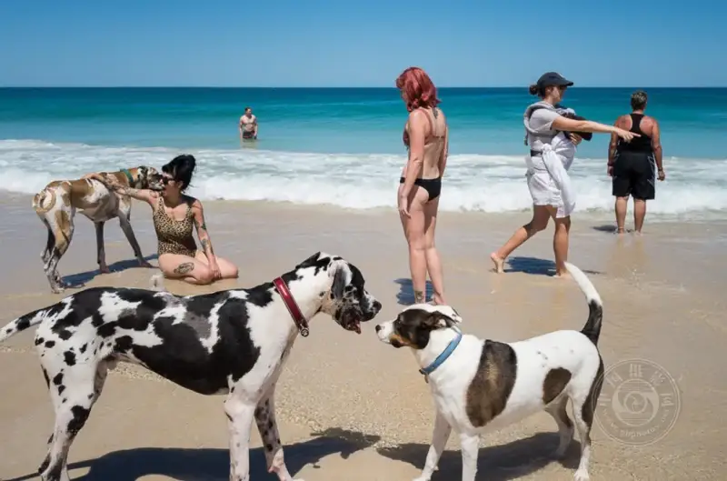
©Rebecca Wiltshire
Work out the light
You read everything on site. Only good light makes the scene better. That hazy light, falling on the street like in Fan Ho photos, or some shadow, creates a lovely drama. A street photographer should know which side of the alley to stand on, based on the time of day or the direction of the sun.
If you shoot toward the sun at an angle, the people drown in unwanted silhouettes, and you will be disappointed. The less you master this, the more you must learn how to handle light. This matters more than any other skill, because light is everything. You can make a great photo with light alone. Without the right light, even with every great element, the photo stays flat. So work out the light.
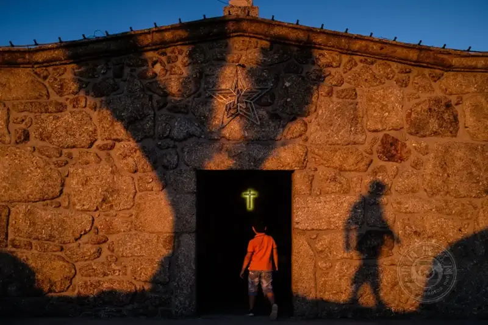
©Giedo van der Zwan
©Giedo van der Zwan
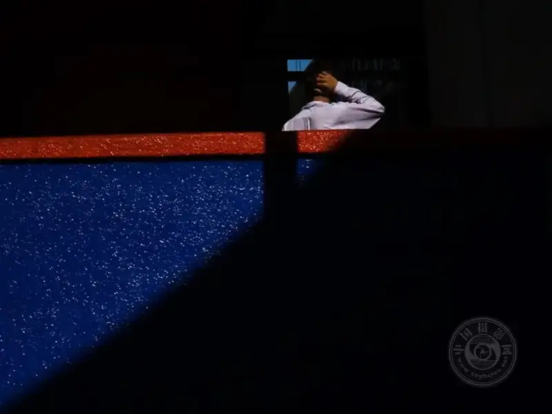
©Shamsull Bakhtiar
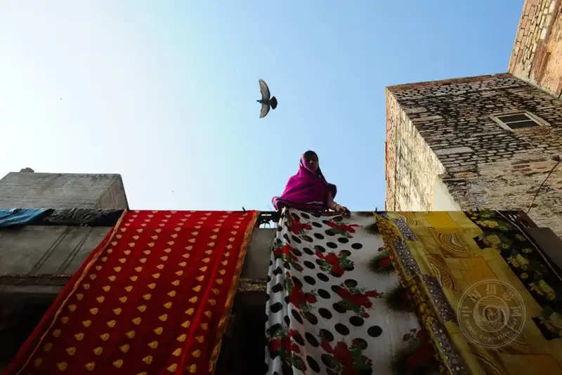
©Catherine Le Scolan-Quéré
Follow your instinct
Taming instinct is hard work. To simplify it, follow your instinct and gain from it. Honestly, there are no rules. There is only a planned mood and a strong urge. You sense that something is about to happen, or you simply wait in your frame for the right thing to occur. The longer you wait, the more your instinct comes true. Sometimes the result surprises you, more than you had waited for. Instinct is mostly a matter of luck. Being in the right place at the right time beats luck. So just be there, and let your instinct work.
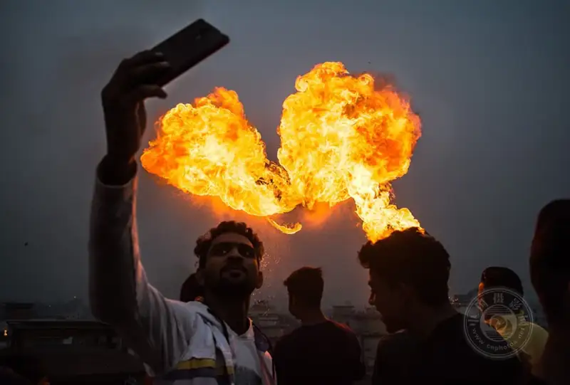
©Shamsull Bakhtiar
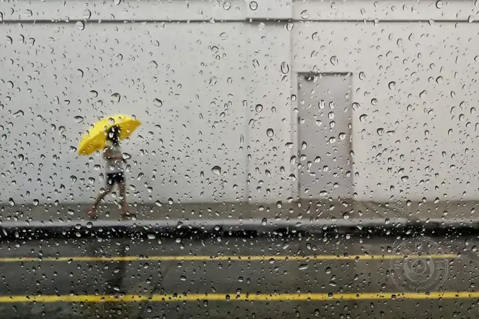
©Sydul Islam Sayed
©Paul Raymond S. Paule
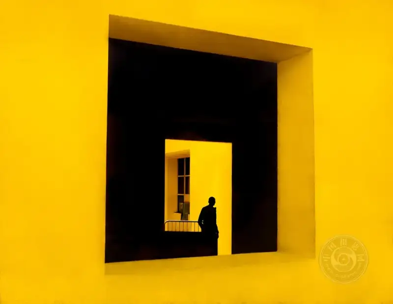
©Brian Villalongja
Look for shapes
Shapes are like bright points in a photo. They are easy for anyone to understand and remember. So look for shapes, pair them well with your subject, and add some lovely light. When you catch a shape, do not make it complex. Few people like solving a puzzle. It gets boring and asks too much of the viewer. Keep the frame simple and inviting, and wait for the right moment to press the shutter. A little study of shape and geometry improves your work, and you can also watch for interesting shadows.
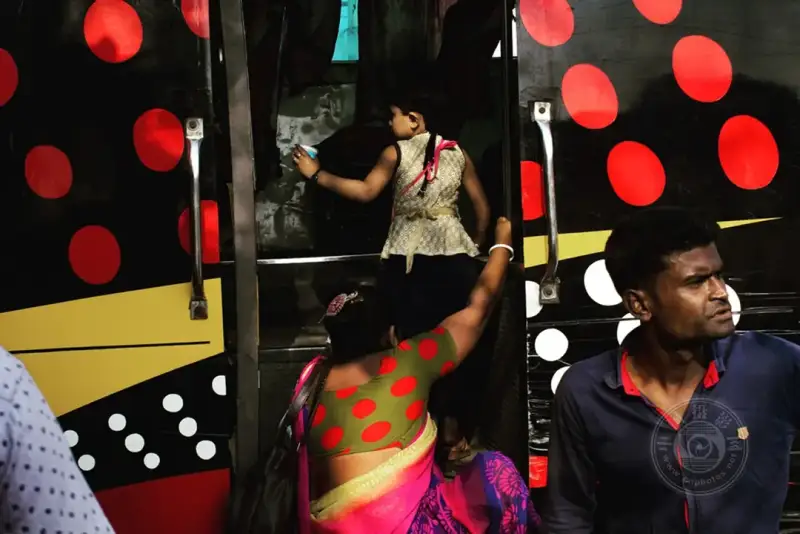
©Karolina Trapp
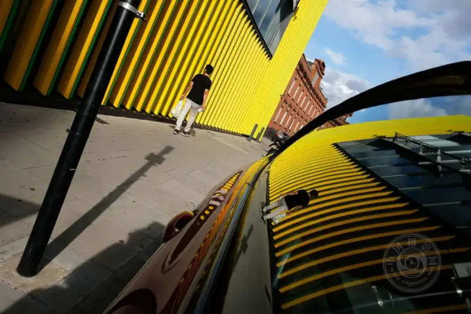
©Ab Rashid
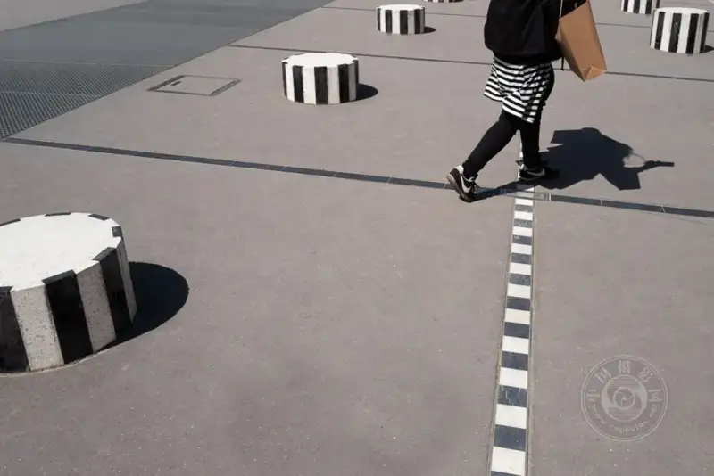
©Francesca Chiacchio
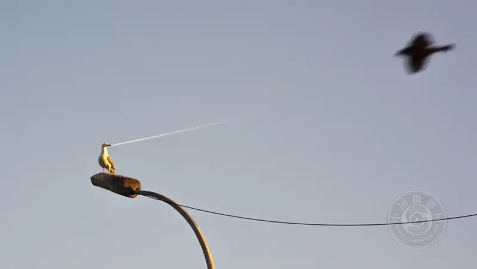
© Karolina Trapp
React fast
When you have mastered everything, time becomes your last weapon. Reaction time is all about speed. Without it, everything else is wasted. The scene may vanish, the light may fade, the subject may be gone. For any street photographer, reacting in time is vital. Never miss a moment, but that does not mean you must worry about missing out. Focus, framing, timing, and the perfect camera settings become natural. The more you practice, the better. It is not about the frame rate of the camera. Frame rate is a nice feature, but when to use it is up to the photographer.
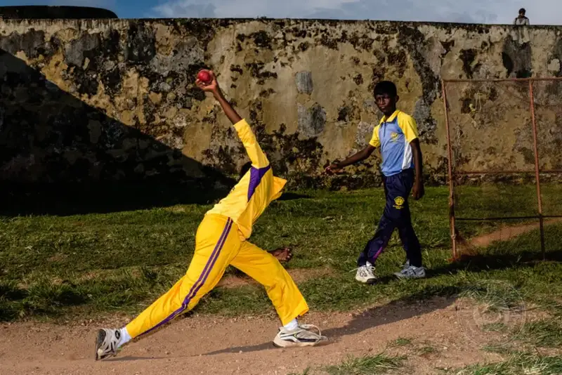
©Serkan Tekin
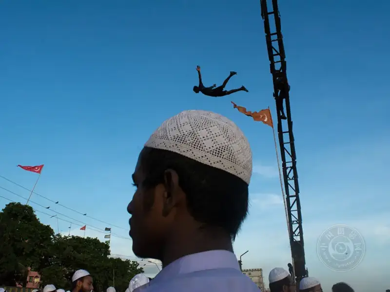
©Giedo van der Zwan
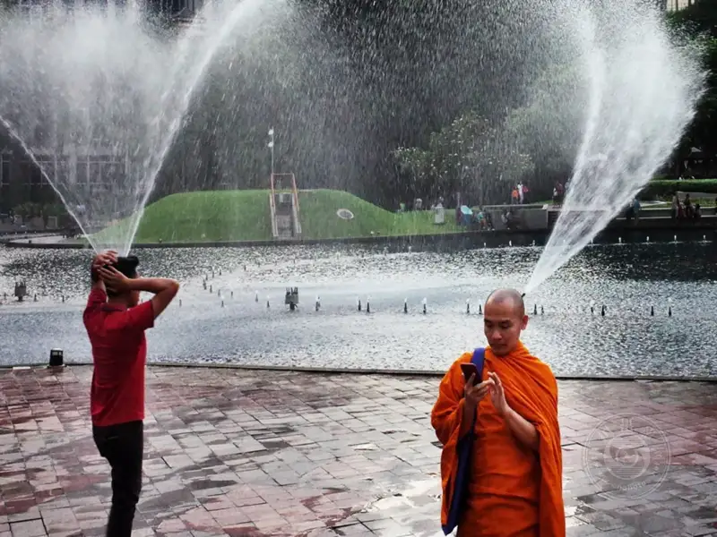
© Md. Sydul Islam Sayed
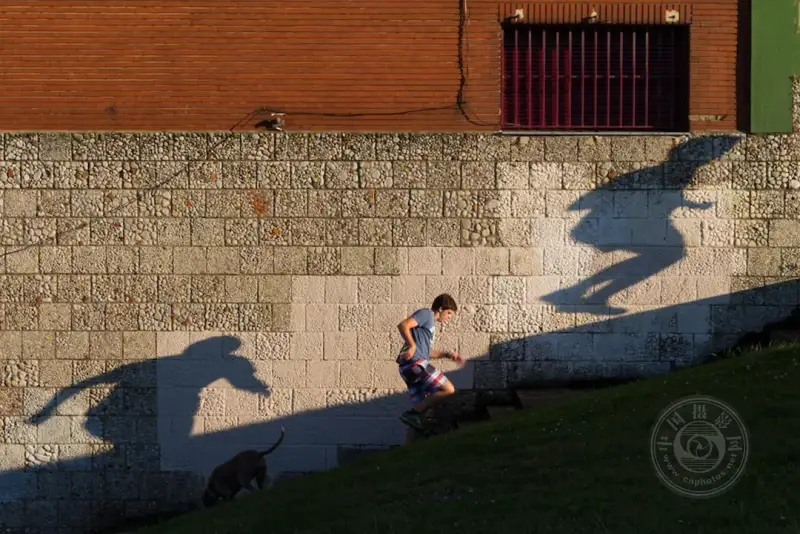
©Shamsull Bakhtiar
Go outside and keep shooting. The environment you shoot in will teach you more than this article can.